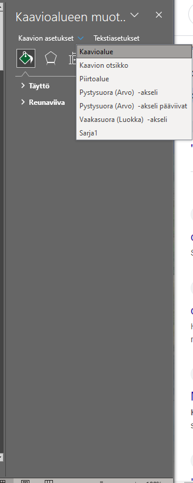

17 Grafiikka Excelissä
Grafiikan teko Excelissä on suht yksinkertaista (verrattuna moneen muuhun tilastotyökaluun). Helpointa on valita data-alue, jonka haluaa esitellä kuvissa, valita mieluinen graaffinen esittely, ja muokata se sopivaan muotoon.
Tässä luvussa käydään läpi, miten tuotat Excelissä yleisimmät graaffiset asettelut: pylväskaavio, pistekaavio ja piiraskaavio. Jos et ole tutustunut tiedon visualisointiin yleisemmin, lue Luku 1.
17.1 Yleiset periaatteet kaavioiden teossa Excelissä
- Laske tilastot, jotka haluat esittää kaaviossa, esim. kategoriamäärät (ks. Alaluku 16.6).
- Valitse lasketut tilastot, ml. mahdolliset otsikot ja selitteet.
Lisää > Suositellut kaaviot, valitse mieluisesi kaavio.- Muokkaa kaaviota sopivaksi.
- Leikkaa ja liimaa kaavio Wordiin, tai oikeaklikkaa kaaviota ja valitse
Tallenna kuvana...
Kaavioita voi tuottaa myös suoraan tilastoista, hyödyntäen Power-kaaviomenetelmää. Emme kuitenkaan käytä näitä tällä kurssilla.
17.2 Kaavion lisääminen
Aloita valitsemalla haluamasi tilastot (kohta 2 yllä, Alaluku 17.1).
Navigoi sitten työkaluvälilehdessä kohtaan Lisää > Suositellut kaaviot. Voit valita kaaviosuosituksista tai kaikkien kaavioiden välillä Kaikki kaaviot-välilehdeltä. Jokaisen kaavion kohdalla näet valitsemaasi dataasi perustuvan esikatselun kaavion ulkonäöstä (Kuva 17.1).

Kun olet löytänyt mieluisen (tai tarpeeksi mieluisen) kaavion, valitse se ja paina OK. Excel lisää kaavion työlehtiöön.
Kaaviot ovat siinä mielessä erityisiä, että vaikka ne elävät työlehtiöissä, niitä voi siirrellä vapaasti mihin tahansa lehtiön sisällä (tai jopa toiseen lehtiöön). Voit siis asettaa kaavion mieluiseen kohtaan lehtiötä, jossa se ei peitä muita työn alla olevia soluja.
17.3 Kaavion muokkaaminen
Kun olet lisännyt kaavion, Excel tuottaa hyvin alkeellisen version siitä (Kuva 17.2). Ennen kuin voit käyttää tätä, sinun tulee lisätä selitteitä ja muokata ulkonäköä sopivaksi. Jos kaksoisnäpäytät kaaviota jossain sen tyhjällä alueella, saat esille kaavioalueen muokkauspaneelin Excelin oikealle puolelle.

Jokaiselle kaavion osalle löytyy oma muokkausnäkymä, jonka saat esille näpäyttämällä muokkauspaneelin pudotusvalikkoa näkymän ylävasemmassa nurkassa (Kuva 17.3). Voit myös näpäyttää mitä tahansa kaavion osaa nähdäksesi sen osan muokkausnäkymän paneelissa, kunhan paneeli on auki.

Uusia osia kuvaan voit lisätä painamalla ensin kaaviota kerran, ja sitten painamalla vihreää +-painiketta kaavion oikealla puolella. Lisäämisen jälkeen voit kaksoisnäpäyttää lisättyjä elementtejä (esim. akseleiden tai arvopisteiden otsikoita) muokataksesi niiden ulkonäköä ja sijoitusta.
Tärkeimmät muokattavat osuudet ovat:
- Selkeä otsikko kaaviolle. Jos raportoit tieteellisen aikakauslehteen, voit usein jättää kaavion otsikon pois ja lisätä se Wordissa kaavion alle. Tarkista kuitenkin lehden muotoiluvaatimukset ensin!
- Arvopisteiden otsikot. Vaikka visuaalisuus auttaa lukemisessa, usein tarkkojen arvojen näkeminen kaaviosta on hankalaa. Lisää siis jokaisen pylvään/piirasosuuden/pisteen arvot kuvioon, kunhan niitä ei ole liikaa. Jos kuvio on täynnä tekstiä, harkitse jotain muuta muotoilua arvojen esittämiseksi.
- Akseleiden otsikot. Kaaviossa tulee olla akseliotsikot (pois lukien piiraskaavioissa), jotka kertovat, mitä akseli esittää sekä millä mitta-asteikolla se on (esim. euroja, pisteitä, z-arvoja).
- Akseleiden koko. Yksimuuttujakaavioiden pystyakseli tulee aina alkaa nollasta, kaksimuuttujakaavioissa ei välttämättä.
- Värit. Vaihda aina värit saavutettaviksi. Hyödynnä kaksoisesittämistä, jolloin esität jokaisen kategorian sekä väreillä että graafisilla kuvioilla. Tällöin kaavio on paremmin luettavissa harmaaskaalaisena sekä värisokealle tai heikkonäköiselle henkilölle. Tarkista myös, että värien välinen kontrasti on tarpeeksi suuri - vaaleanharmaan ja valkoisen välillä voi olla hyvin vaikeaa erottaa1, kuten esim. erisävyisten värien välillä.
1 Jopa henkilöille, joilla muuten on täydellinen näkö!
Alla on esimerkki kaaviosta, jonka olen muotoillut valmiiseen muotoon (Kuva 17.4).

Seuraavassa prosessikuvailussa oletan, että muokkauspaneeli on auki. Jos se ei ole, kaksoisnäpäytä kaavion tyhjää aluetta avataksesi sen.
Lisäsin kuvion otsikon, akseleiden otsikot sekä arvopisteiden otsikot:
Lisääminen: Paina kaavaa > Paina vihreää
+-kuvaketta >Kaavion otsikko, Akselien otsikot, Arvopisteiden otsikotTekstin muokkaaminen: Kaksoisnäpäytä haluttua tekstiä ja kirjoita uusi teksti.
Arvopisteiden otsikkojen taustaväriksi on valittu vaaleanharmaa, jotta se erottuisi hieman paremmin valkoisesta taustasta.
- Näpäytä jotain arvopisteotsikkoa > Valitse maalipurkki-ikoni > Avaa
Täyttö-pudotusvalikko >Tasainen täyttö> MääritteleVäri.
- Näpäytä jotain arvopisteotsikkoa > Valitse maalipurkki-ikoni > Avaa
Väriksi on valittu Pelastusopiston punainen, sopiakseen Pelastusopiston graafiseen ulkonäköön. Hyödynnä opiston graafista ohjeistusta tähän.
- Näpäytä jotain palkkia > Valitse maalipurkki-ikoni > Avaa
Täyttö-pudotusvalikko >Tasainen täyttö> MääritteleVäri.
- Näpäytä jotain palkkia > Valitse maalipurkki-ikoni > Avaa
Vaihdoin kaavan selitealueen.
Kirjoita selitteet omiin soluihin jonnekin työlehtiöön (esim. arvojen viereen). Kirjoita ne samassa järjestyksessä, kuin ne ovat kaaviossa!
Selitealueen vaihtaminen: Oikeaklikkaa kaaviota >
Valitse tiedot...> Vaaka-akselin ruudussa painaMuokkaa> Valitse alue, johon olet kirjoittanut selitteet >OK>OK.